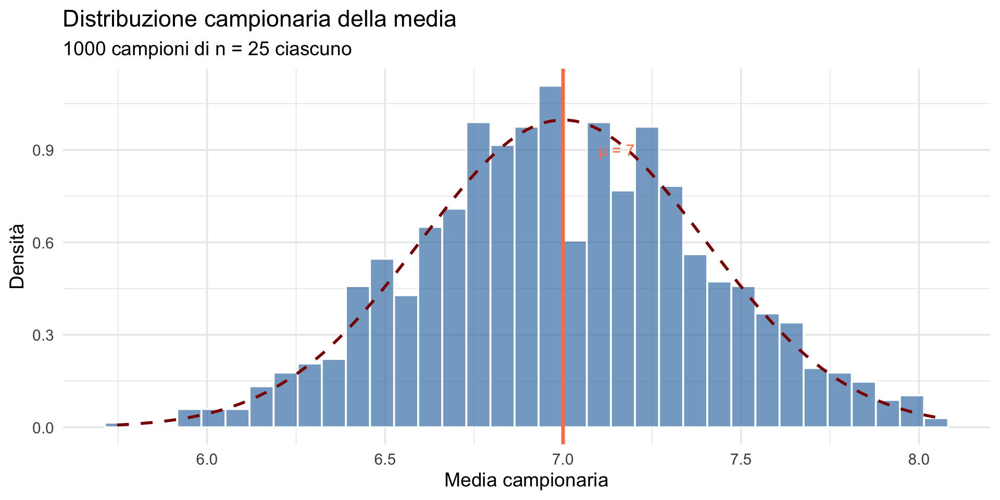
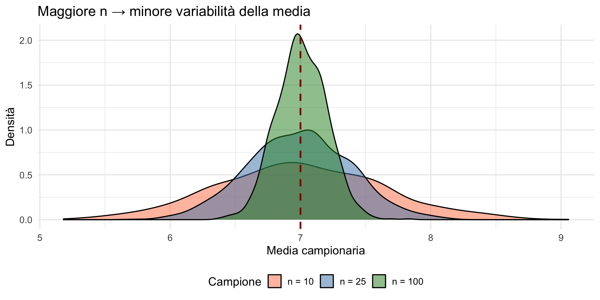
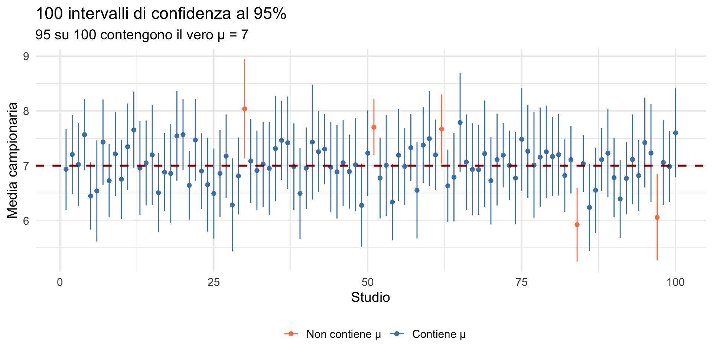
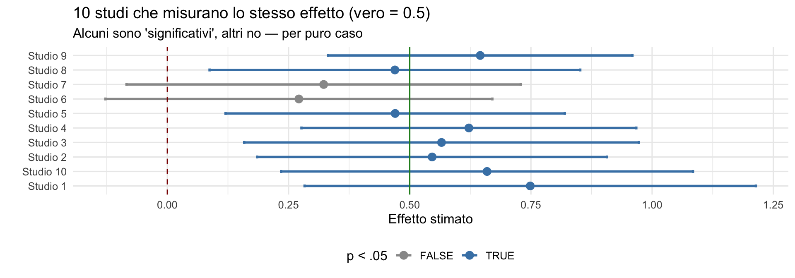

La domanda del ricercatore
e la risposta frequentista — Segmento 2
![]()
29 ottobre 2026
Dove eravamo
Parte 1: abbiamo visto
- il gap tra domanda naturale e risposta frequentista;
- l’inversione logica: \(P(\text{dati} \mid H_0)\) invece di \(P(H \mid \text{dati})\);
- il concetto di distribuzione campionaria;
- l’errore standard.
Parte 2: vedremo
- simulazioni R per consolidare l’intuizione;
- l’intervallo di confidenza: cosa è (e cosa non è);
- perché tutto questo è al centro della crisi di riproducibilità.
Parte 1: simulazioni approfondite
Scenario: memoria di lavoro
Ipotizziamo che nella popolazione degli studenti universitari:
- capacità di memoria di lavoro (span di cifre): \(\mu = 7\);
- deviazione standard: \(\sigma = 2\).
Domanda: se estraiamo un campione (casuale) di \(n = 25\) studenti e calcoliamo la media, quanto sarà vicina a \(\mu = 7\)?
Simuliamo 1000 campioni
Come funziona replicate()?
La funzione replicate() ripete un’operazione un numero specificato di volte e raccoglie i risultati.
Analogia pratica
Immagina di dire a un assistente:
“Prendi 25 persone dalla popolazione, calcola la loro media, e scrivila. Poi ripeti tutto da capo altre 999 volte.”
Sintassi
Nel nostro caso:
Cosa succede ad ogni iterazione
Ad ogni ciclo replicate():
- estrae un nuovo campione casuale dalla popolazione \(N(\mu=7, \sigma=2)\);
- calcola la media di quei 25 valori;
- salva il risultato nel vettore
medie.
Dopo 1000 iterazioni, medie conterrà 1000 medie campionarie, ciascuna proveniente da un diverso campione casuale della stessa popolazione.
Perché usare replicate() invece di un ciclo for?
Entrambi funzionano, ma replicate() è:
- più conciso (meno codice);
- più leggibile (intento chiaro: “ripeti questa operazione”);
- meno propenso a errori (gestisce automaticamente la raccolta dei risultati).
Equivalente con ciclo for
Il risultato finale (medie) è identico in entrambi i casi.
- La distribuzione di queste 1000 medie è proprio la distribuzione campionaria della media che volevamo esplorare.
Esaminiamo i primi 30 valori:
La distribuzione campionaria della media

Statistiche della distribuzione campionaria
Media delle medie campionarie: 6.997 DS delle medie (errore standard): 0.407 Errore standard teorico (σ/√n): 0.4 Nota
La distribuzione campionaria è centrata su μ e ha DS = σ/√n.
Effetto della dimensione campionaria

Implicazione per la ricerca psicologica
SE con n = 10: 0.63 SE con n = 25: 0.4 SE con n = 100: 0.2 Avviso
Con campioni piccoli (tipici in psicologia: \(n\) = 20-30), le medie campionarie variano molto tra uno studio e l’altro, anche se l’effetto è reale e costante.
Parte 2: L’intervallo di confidenza
Dalla distribuzione campionaria all’incertezza
Sappiamo che la media campionaria varia da campione a campione.
Domanda: come possiamo quantificare questa incertezza in modo utile e comunicabile?
Nota
La risposta frequentista:
l’intervallo di confidenza (IC) — un metodo per tradurre la variabilità campionaria in una stima intervallare del parametro ignoto.
L’idea in una frase
Partiamo da ciò che sappiamo sulla distribuzione campionaria
e lo ribaltiamo per ottenere un’affermazione sul parametro.
1) Le assunzioni di partenza
Supponiamo che il campione provenga da una popolazione normale con varianza nota:
\[ X_1,\dots,X_n \overset{\text{iid}}{\sim} \mathcal N(\mu,\sigma^2). \]
Allora la media campionaria segue una distribuzione normale:
\[ \bar X = \frac{1}{n}\sum_{i=1}^n X_i \qquad\sim\qquad \mathcal N\!\left(\mu,\frac{\sigma^2}{n}\right) \]
2) Standardizziamo
Se sottraiamo la media e dividiamo per la deviazione standard, otteniamo una variabile normale standard:
\[ Z = \frac{\bar X - \mu}{\sigma/\sqrt{n}} \quad\sim\quad \mathcal N(0,1) \]
3) Prendiamo il 95% centrale della normale
Per definizione del quantile \(z_{0.975}\):
\[ \mathbb P(-z_{0.975} \le Z \le z_{0.975}) = 0.95 \]
Sappiamo che \(z_{0.975} \approx 1.96\).
Dunque:
\[ \mathbb P\!\left(-1.96 \le \frac{\bar X - \mu}{\sigma/\sqrt{n}} \le 1.96\right) = 0.95 \]
4) Il passaggio cruciale: invertire l’ineguaglianza
Finora abbiamo fatto un’affermazione su \(\bar X\) dato \(\mu\).
Ora la invertiamo in un’affermazione su \(\mu\) dato \(\bar X\).
Passo 1 — Moltiplichiamo per \(\sigma/\sqrt{n} > 0\):
\[ -1.96\frac{\sigma}{\sqrt{n}} \le \bar X - \mu \le 1.96\frac{\sigma}{\sqrt{n}} \]
Passo 2 — Sottraiamo \(\bar X\):
\[ -\bar X -1.96\frac{\sigma}{\sqrt{n}} \le -\mu \le -\bar X + 1.96\frac{\sigma}{\sqrt{n}} \]
Passo 3 — Moltiplichiamo per \(-1\) invertendo i versi:
\[ \bar X + 1.96\frac{\sigma}{\sqrt{n}} \ge \mu \ge \bar X - 1.96\frac{\sigma}{\sqrt{n}} \]
Passo 4 — Riscriviamo in ordine crescente:
\[ \bar X - 1.96\frac{\sigma}{\sqrt{n}} \;\le\; \mu \;\le\; \bar X + 1.96\frac{\sigma}{\sqrt{n}} \]
5) Rimettiamo la probabilità
Ora l’incognita \(\mu\) è al centro della disuguaglianza:
\[ \mathbb P\!\left(\bar X - 1.96\frac{\sigma}{\sqrt{n}} \;\le\; \mu \;\le\; \bar X + 1.96\frac{\sigma}{\sqrt{n}}\right) = 0.95 \]
Questa è la definizione formale di un intervallo di confidenza frequentista al 95%
Una procedura che, applicata a infiniti campioni dalla stessa popolazione, produce intervalli che contengono il vero parametro \(\mu\) nel 95% dei casi.
6) Sul singolo campione
Quando osserviamo un singolo campione, otteniamo un valore specifico \(\bar x\):
\[ IC_{95\%} = \left[ \bar{x} - 1.96 \frac{\sigma}{\sqrt{n}},\; \bar{x} + 1.96 \frac{\sigma}{\sqrt{n}} \right] \]
Attenzione — L’errore di interpretazione più comune
| ✅ Cosa significa il 95% | ❌ Cosa NON significa |
|---|---|
| La procedura ha una probabilità del 95% di produrre un intervallo che contiene \(\mu\), prima di osservare i dati. | C’è il 95% di probabilità che \(\mu\) sia in questo specifico intervallo, dopo aver osservato i dati. |
| Su infiniti campioni, il 95% degli intervalli conterrà \(\mu\). | \(\mu\) ha il 95% di probabilità di cadere qui. |
Perché?
\(\mu\) non è una variabile casuale. È un valore fisso (anche se sconosciuto).
L’intervallo calcolato lo contiene o non lo contiene — non c’è spazio per la probabilità a posteriori.
7) Nella realtà: \(\sigma\) è quasi sempre ignota
Finora abbiamo assunto \(\sigma\) nota.
Nella pratica, la deviazione standard della popolazione non è mai nota.
Soluzione: la stimiamo con la deviazione standard campionaria \(s\):
\[ IC_{95\%} \;\approx\; \bar{x} \pm 1.96 \frac{s}{\sqrt{n}} \]
Questa è una approssimazione — valida per campioni grandi (per il teorema del limite centrale) o per dati normali con \(n\) non troppo piccolo.
8) La versione esatta: distribuzione t di Student
Se \(\sigma\) è ignota e i dati sono normali, il pivot corretto è:
\[ T = \frac{\bar X - \mu}{s/\sqrt{n}} \;\sim\; t_{n-1} \]
dove \(t_{n-1}\) è la distribuzione t di Student con \(n-1\) gradi di libertà.
Il 95% centrale diventa:
\[ \mathbb P\!\left(-t_{0.975,\;n-1} \le \frac{\bar X - \mu}{s/\sqrt{n}} \le t_{0.975,\;n-1}\right) = 0.95 \]
Invertendo come prima:
\[ IC_{95\%} = \bar x \;\pm\; t_{0.975,\;n-1} \frac{s}{\sqrt{n}} \]
Confronto: 1.96 vs t
| \(n\) | \(t_{0.975,\;n-1}\) | Differenza da 1.96 |
|---|---|---|
| 10 | 2.26 | +0.30 |
| 30 | 2.04 | +0.08 |
| 100 | 1.98 | +0.02 |
| ∞ | 1.96 | — |
All’aumentare di \(n\), \(t\) tende a 1.96.
Per \(n\) piccolo, usare 1.96 invece del valore corretto sottostima l’incertezza.
Riepilogo: il percorso logico dell’IC
| Passo | Operazione | Risultato |
|---|---|---|
| ① | Distribuzione campionaria | \(\bar X \sim \mathcal N(\mu, \sigma^2/n)\) |
| ② | Standardizzazione | \(Z = (\bar X - \mu)/(\sigma/\sqrt{n}) \sim \mathcal N(0,1)\) |
| ③ | Quantile normale | \(\mathbb P(-1.96 \le Z \le 1.96) = 0.95\) |
| ④ | Inversione algebrica | \(\mathbb P\big(\bar X - 1.96\sigma/\sqrt{n} \le \\ \mu \le \bar X + 1.96\sigma/\sqrt{n}\big) = 0.95\) |
| ⑤ | Applicazione al campione | \(IC = \bar x \pm 1.96 \sigma/\sqrt{n}\) |
| ⑥ | Caso reale (\(\sigma\) ignota) | \(IC = \bar x \pm t_{n-1} \cdot s/\sqrt{n}\) |
L’intervallo di confidenza non è una risposta su \(\mu\).
È una dichiarazione di affidabilità del metodo che abbiamo usato.
Esempio numerico
# Un singolo campione
set.seed(42)
campione <- rnorm(25, mean = mu, sd = sigma)
# Statistiche
media_camp <- mean(campione)
sd_camp <- sd(campione)
se <- sd_camp / sqrt(25)
# Intervallo di confidenza
t_critico <- qt(0.975, df = length(campione) - 1)
ic_lower <- media_camp - t_critico * se
ic_upper <- media_camp + t_critico * seMedia campionaria: 7.38 Errore standard: 0.52 IC 95%: [ 6.3 , 8.45 ]La domanda cruciale
Questo intervallo \([6.3, 8.45]\) contiene il vero valore \(\mu = 7\)?
Ma non possiamo sempre saperlo: nella realtà \(\mu\) è sconosciuto.
Parte 3: cosa significa “95%”?
Due interpretazioni a confronto
Interpretazione ERRATA
“C’è il 95% di probabilità che il vero valore del parametro sia in questo intervallo”
Interpretazione CORRETTA
“Se ripetessimo lo studio infinite volte, il 95% degli intervalli così costruiti conterrebbe il vero valore”
La differenza è sottile ma fondamentale
L’interpretazione frequentista riguarda la procedura, non questo particolare intervallo.
- Il parametro \(\mu\) è fisso (non casuale) — semplicemente non lo conosciamo.
- L’intervallo è casuale — varia da campione a campione.
- Questo intervallo specifico o contiene μ o non lo contiene — non c’è una probabilità.
Vediamolo con una simulazione
Generiamo 100 intervalli di confidenza e vediamo quanti contengono \(\mu = 7\):
set.seed(123)
n_studi <- 100
# Simuliamo 100 studi
risultati <- lapply(1:n_studi, function(i) {
campione <- rnorm(25, mean = mu, sd = sigma)
m <- mean(campione)
se <- sd(campione) / sqrt(25)
data.frame(
studio = i,
media = m,
lower = m - 1.96 * se,
upper = m + 1.96 * se
)
})
df_ic <- do.call(rbind, risultati)
df_ic$contiene_mu <- df_ic$lower <= mu & mu <= df_ic$upperVisualizziamo i 100 intervalli

Quanti intervalli contengono μ?
Intervalli che contengono μ: 95 su 100Proporzione: 0.95 Circa il 95% degli intervalli contiene il vero valore — come previsto dalla teoria.
Ma per ogni singolo intervallo, non sappiamo se è tra quelli “fortunati” o meno.
L’analogia della rete da pesca
Immagina di pescare con una rete che, nel lungo periodo, cattura il pesce target il 95% delle volte.
Dopo un singolo lancio:
- Il pesce è nella rete, oppure no — non c’è “95% di probabilità”.
- Il 95% descrive l’affidabilità della rete nel lungo periodo.
Nota
L’intervallo di confidenza è la “rete”. Il parametro è il “pesce”. Il paradosso è che abbiamo fatto un solo lancio e non possiamo guardare dentro la rete.
Parte 4: errori comuni di interpretazione
L’esperimento di Hoekstra et al. (2014)
Ricercatori e studenti hanno risposto a un quiz su cosa significa un IC al 95%.
Risultato: la maggior parte ha scelto interpretazioni errate — inclusi i ricercatori con dottorato.
Affermazioni FALSE su un IC al 95%
“La probabilità che il vero valore sia nell’intervallo è 95%”
“Il 95% dei dati cade nell’intervallo”
“Se ripetessi lo studio, il 95% delle volte la media cadrebbe in questo intervallo”
“C’è il 95% di probabilità che la media del prossimo campione cada in questo intervallo”
Avviso
Anche ricercatori esperti commettono questi errori! Il fatto che l’interpretazione corretta sia controintuitiva non è un dettaglio — è un problema strutturale dell’approccio frequentista.
Perché queste interpretazioni sono errate?
Affermazione 1:
“La probabilità che μ sia nell’intervallo è 95%”
- Nel framework frequentista, μ è fisso, non è una variabile casuale.
- Non ha una distribuzione di probabilità.
- L’intervallo, una volta calcolato, o contiene μ oppure no.
- Il 95% si riferisce alla procedura, non al parametro.
Affermazione 2:
“Il 95% dei dati cade nell’intervallo”
- L’intervallo di confidenza riguarda il parametro μ, non i singoli dati.
- I dati sono molto più variabili della media campionaria.
- Un IC al 95% non è un intervallo che contiene il 95% delle osservazioni.
- Questo sarebbe un intervallo di previsione, che è un oggetto diverso.
Affermazione 3:
“Se ripetessi lo studio, il 95% delle volte la media cadrebbe in questo intervallo”
- L’intervallo è stato costruito usando questa specifica media campionaria.
- Se ripetessimo lo studio, cambierebbe la media → cambierebbe anche l’intervallo.
- Non stiamo chiedendo dove cadrà la media. Stiamo chiedendo quante volte l’intervallo costruito con la procedura conterrà μ.
👉 È l’intervallo che varia da campione a campione, non μ.
Affermazione 4:
“C’è il 95% di probabilità che la media del prossimo campione cada in questo intervallo”
- L’IC non è progettato per catturare future medie campionarie.
- Per quello servirebbe un intervallo di previsione per la media futura, che è diverso.
- L’IC descrive la relazione tra la media osservata e il parametro μ, non tra campioni diversi.
Interpretazione corretta
Un intervallo di confidenza al 95% significa:
se ripetessimo il campionamento molte volte e costruissimo ogni volta l’intervallo con la stessa procedura, circa il 95% di quegli intervalli conterrebbe il vero valore μ.
Esempio: training cognitivo e QI
Studio: effetto del brain training su n = 30 partecipanti.
Risultato: differenza media pre-post: +3.5 punti QI, con IC 95% = [1.2, 5.8].
ERRATO
“C’è il 95% di probabilità che il vero effetto del training sia tra 1.2 e 5.8 punti”
CORRETTO
“Se ripetessimo questo studio infinite volte, il 95% degli IC costruiti così conterrebbe il vero effetto”
L’ironia della situazione
L’interpretazione errata dell’IC — “c’è il 95% di probabilità che il parametro sia qui dentro” — è in realtà la domanda a cui vorremmo davvero rispondere.
E l’approccio bayesiano, attraverso l’intervallo di credibilità, risponde esattamente a quella domanda: dato ciò che abbiamo osservato e le nostre conoscenze pregresse, con quale probabilità il parametro cade in un certo intervallo?
L’ironia della situazione
In altre parole: l’interpretazione che le persone pensano di dare all’IC frequentista è di fatto l’interpretazione corretta dell’intervallo di credibilità bayesiano. Questo aiuta a capire perché l’approccio bayesiano è spesso percepito come più naturale.
Parte 5: perché conta per la psicologia
Comunicazione con pazienti e clienti
Uno psicologo non può dire:
“c’è il 95% di probabilità che questo trattamento funzioni per lei”.
L’IC non fornisce questa informazione — anche se sembra che la dia.
Interpretazione della letteratura scientifica
Molti articoli interpretano erroneamente i propri risultati.
Frasi come:
“l’intervallo di confidenza indica che c’è una probabilità del 95% che l’effetto reale sia compreso tra…”
…sono tecnicamente scorrette, ma molto comuni — anche su riviste di alto impatto.
La crisi di riproducibilità: i numeri
Nel 2015, il progetto Reproducibility Project: Psychology ha replicato 100 studi: solo il 36% delle repliche ha raggiunto la significatività, contro il 97% degli studi originali.
La dimensione media degli effetti nelle repliche era circa la metà di quella riportata negli studi originali.
Risultati simili sono emersi in economia sperimentale, in oncologia preclinica e in neuroscienze sociali. Non è un problema di una singola disciplina — è un problema del modo in cui la ricerca usa (e abusa) gli strumenti statistici frequentisti.
Perché il frequentismo è al centro della crisi
Diversi fattori concorrono e molti sono legati alla logica dell’inferenza frequentista.
Campioni piccoli + variabilità campionaria.
Con \(n = 20\)-\(30\) per gruppo (tipico in psicologia), l’errore standard è grande. Studi con bassa potenza statistica producono stime instabili che oscillano tra “significativo” e “non significativo” a seconda del campione.
La soglia \(p < .05\) come criterio binario.
Un effetto con \(p = .049\) viene pubblicato; lo stesso effetto con \(p = .051\) resta nel cassetto. Questa logica “tutto o niente” distorce la letteratura.
Publication bias.
Se solo i risultati significativi vengono pubblicati, la letteratura sovrastima sistematicamente la dimensione degli effetti.
La “danza” dei valori-\(p\)

Cosa vediamo nel grafico
Tutti e 10 gli studi misurano lo stesso effetto reale (0.5, linea verde). Eppure alcuni raggiungono la significatività statistica e altri no.
Se venissero pubblicati solo gli studi “significativi” (quelli in blu), un lettore della letteratura concluderebbe che l’effetto è più grande di quanto sia in realtà — perché le stime significative tendono a sovrastimare l’effetto vero (devono essere abbastanza grandi da superare la soglia).
Questo meccanismo si chiama errore di tipo M (magnitude error): le stime pubblicate sono sistematicamente esagerate. Ne parleremo in dettaglio nella prossima lezione.
Dalla crisi alle soluzioni
La comunità scientifica ha risposto alla crisi con diverse strategie:
Pre-registrazione degli studi: dichiarare le analisi prima di raccogliere i dati, per evitare che si cerchino risultati significativi a posteriori.
Spostamento verso la stima: riportare dimensioni dell’effetto e intervalli di confidenza invece di limitarsi a “significativo/non significativo” (la cosiddetta new statistics).
Approccio bayesiano: fornisce direttamente la probabilità dell’ipotesi dati i dati, permette di quantificare l’evidenza a favore di \(H_0\) (non solo contro) e non dipende da esperimenti ipotetici mai condotti.
Il problema fondamentale
L’IC risponde alla domanda:
“quanto sarebbe variabile la mia stima se ripetessi l’esperimento?”
Ma non risponde alla domanda che vorremmo porre:
“qual è la probabilità che il parametro sia in questo intervallo?”
Importante
Per rispondere a quest’ultima domanda, serve l’inferenza bayesiana — che vedremo tra poche lezioni.
Riepilogo
Il percorso fin qui
Lezioni 5-11 — Probabilità, distribuzioni, valore atteso, covarianza.
Lezione 12 — Verosimiglianza: come i dati parlano dei parametri.
Lezione 14 (oggi) — Inferenza frequentista: distribuzione campionaria, errore standard, IC.
Avete ora gli strumenti per capire cosa fa l’inferenza frequentista — e cosa non fa. Nella prossima lezione vedremo il valore-\(p\), i test di ipotesi, e gli errori di tipo S e M. Poi saremo pronti per l’inferenza bayesiana, che risponde direttamente alle domande che il frequentismo lascia senza risposta.
I punti chiave di oggi
Il frequentismo risponde a una domanda diversa da quella che vorremmo porre.
L’errore standard misura la variabilità tra esperimenti ipotetici.
L’IC al 95% riguarda la procedura, non questo particolare intervallo.
La maggior parte delle interpretazioni comuni degli IC sono tecnicamente errate.
Queste limitazioni hanno conseguenze reali per la comunicazione scientifica e sono al centro della crisi di riproducibilità.
Prossima lezione
Il valore-\(p\), i test di ipotesi, e perché “\(p\) < .05” non significa quello che pensi.
- Cosa significa (e non significa) il valore-\(p\).
- Errori di tipo I e II.
- Errori di tipo S e tipo M (Gelman & Carlin).
- Il legame con la crisi di replicabilità.
Per approfondire
Materiali del corso:
Letture consigliate:
- Hoekstra, R., et al. (2014). Robust misinterpretation of confidence intervals. Psychonomic Bulletin & Review.
- Morey, R. D., et al. (2016). The fallacy of placing confidence in confidence intervals. Psychonomic Bulletin & Review.
- Open Science Collaboration (2015). Estimating the reproducibility of psychological science. Science.
Un pensiero finale
“The most important maxim for data analysis: the purpose of computing is insight, not numbers.”
— Richard Hamming
Le simulazioni condotte oggi hanno l’obiettivo di sviluppare un’intuizione, non di far memorizzare formule. Solo con questa intuizione potrete leggere criticamente la letteratura e decidere, per il vostro lavoro futuro, quali strumenti statistici rispondono davvero alle domande che vi porrete.